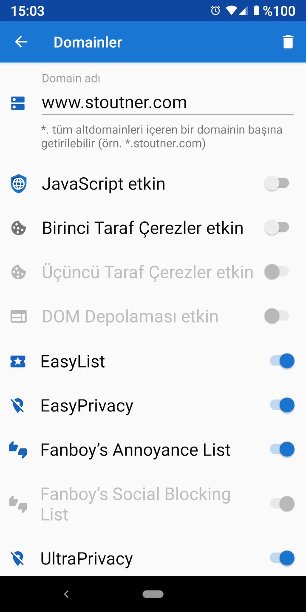

Güvenli Web Taraması Güvenli Web Taraması
Güvenli Web Taraması Güvenli Web TaramasıPrivacy Browser, JavaScript'i, çerezleri ve DOM depolamayı varsayılan olarak devre dışı bırakır. Ancak, bazı web sayfalarının düzgün çalışması için bu özelliklerin etkin olması gerekebilir. Özel bir domain ziyaret edilirken, belirli bir özellik kümesi domain ayarlarından otomatik olarak aktif edilebilir.

Ayarları özelleştirilmiş bir domain ziyaret edilirken, URL metin kutusunun arka planı yeşil olur.